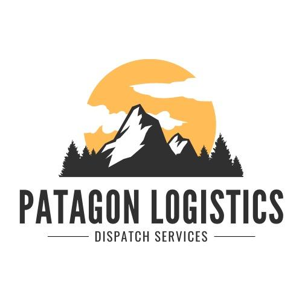
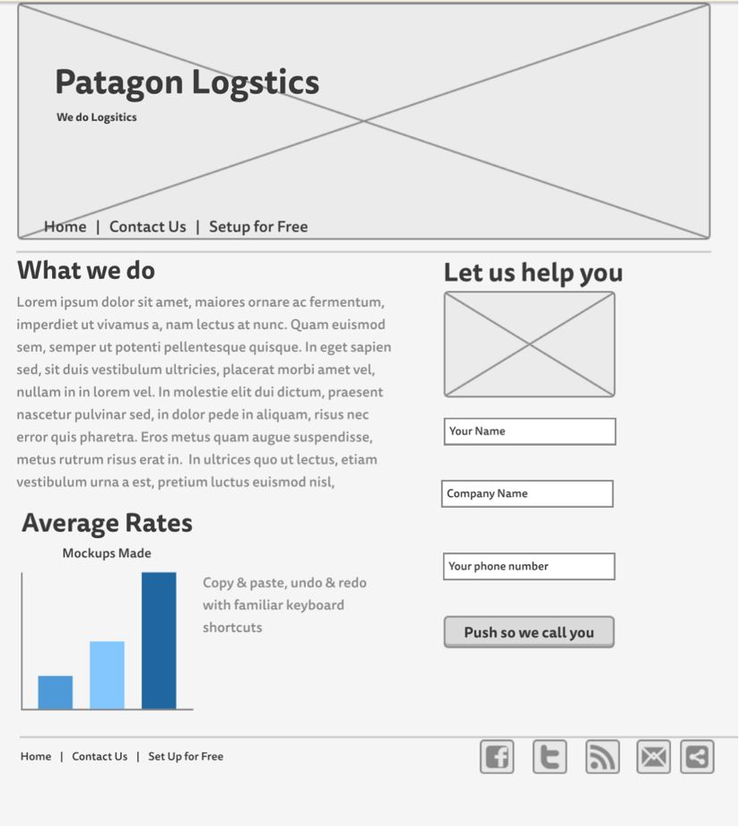
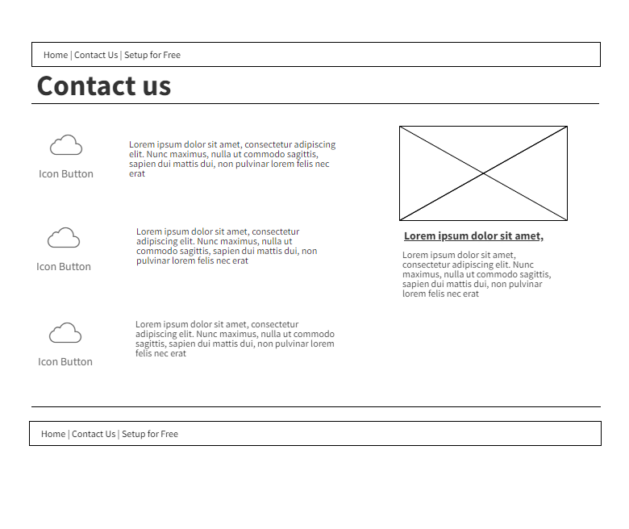
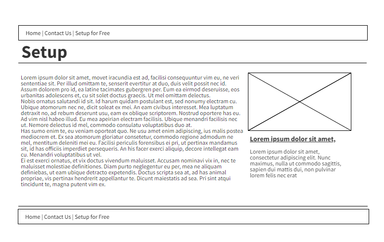

Overview
Purpose
The purpose of the website is to connect potential clients. More specifically, people who own their trucking companie, or work for one that are in need of Dispatch services.
By creating this website, the goal is to is to comunicate this potential clients that, we can save them time and ake them make more money with our service, and that, we will be the best option to hire a dispatch services company.
The Website will provide information, clients reviews, and the information they need to start working with us., tracking shipments, and communicating with drivers and customers. They may also be looking for ways to optimize their operations and increase efficiency, such as by reducing deadhead miles or improving load planning.
Audience
The audience for the web, would be primarily trucking companies that are in need of freight dispatch services. this would be small owner operator businesses to large fleets.
These trucking companies would likely be looking for a reliable and efficient way to manage their dispatch operations, including finding and booking loads
Another posible interested player on the website, would be freight brokers who are in need of of dispatch services to help them manage their logistics operations.
The target audience forthe website, would primarily be trucking companies in need of assistance managing their dispatch operations, as well as freight brokers in need of dispatch services to support their logistics operations.
Branding
Website Logo
Style Guide
Color Palette
Palette URL: https://coolors.co/396e94-e7c24f-a43312-381d2a-aabd8c| Primary | Secondary | Accent 1 | Accent 2 |
|---|---|---|---|
| [#000000] | [#003D71] | [#FCA311] | [#E5E5E5] |
Typography
Heading Font: Arial
Paragraph Font: Arial
Normal paragraph example
In Patagon Logistics Group we offer you a 24/7 dispatch service. We work hard, to keep your trucks and drivers working, with the best loads to move, for the best price in the market. Forget about 24/7 phone calls, filling up contracts and invoicing. We take care of your customer relationships by consistently communicating freight status and resolving any issues. We take care of your driver's timing, appointments and guide on the route to maximize the profitability of your company.
Colored paragraph example
In Patagon Logistics Group we offer you a 24/7 dispatch service. We work hard, to keep your trucks and drivers working, with the best loads to move, for the best price in the market. Forget about 24/7 phone calls, filling up contracts and invoicing. We take care of your customer relationships by consistently communicating freight status and resolving any issues. We take care of your driver's timing, appointments and guide on the route to maximize the profitability of your company.
Navigation
Site Map
Content
Text Content to be used in all the web site
Patagon Logistics Group: Reliable Dispatch Services for Trucking Companies
Introduction:
In Patagon Logistics Group we offer you a 24/7 dispatch service. We work hard, to keep your trucks and drivers working, with the best loads to move, for the best price in the market. Forget about 24/7 phone calls, filling up contracts and invoicing. We take care of your customer relationships by consistently communicating freight status and resolving any issues. We take care of your driver's timing, appointments and guide on the route to maximize the profitability of your company.
Why choose Patagon Logistics Group?
Our team works hard to ensure that we provide the best possible service to our clients. We help our clients to increase their profits and grow their business. We have a vast and diverse network of brokers and transport companies that allow us to offer our clients the best possible options for their transportation needs.Our mission is to be the best in the market, so you can be the best too.
Personalized Customer Service:
In Patagon Logistics Group, we believe in providing personalized customer service to each of our clients. We assign a dedicated dispatcher to each client, who acts as a single point of contact 24/7 during the time your trucks are transporting goods. This ensures clear communication and efficient problem resolution.
Services offered
We offer a wide range of services to meet our clients needs. Our Services include dispatch 24/7, load planning, fleet management, and customer service. We like to ensure that our clients trucks and drivers are always working with the best loads the market offers, to optimize your resources and maximize your profits boosting your company growth. We also take care of your paperwork such as invoicing, contracts, so our clients can dedicate efforts on what theory does best - running their business.
Customer service
At Patagon Logistics Group, we believe great customer service is the key for a successful business relationship. We feel proud to say that we offer a 24/7 communication line, to provide the best communication possible. Our customer service consists of good communication, constant updates on freight status, locations, temperature control, and resolving any issue that may surge. Our team will always be there to answer questions, update you, and assist you in any possible way and happily provide you the best service.
Customized service
In Patagon Logistics Group, we understand that every customer has its own needs,that is why we offer customized Services to fit each customer's specific needs. We dedicate part of our efforts to understand and collaborate with their unique transportations needs, and provide them with the best solution for them, ensuring their satisfaction.
Testimonials
Our current clients are the ones that can let you know better than anyone about our services and their level of satisfaction. We worked with many clients over the years and we received many positive testimonials about the level of service and the way we handle their transportation needs. We feel proud of the level of satisfaction of our clients and we look forward to keeping building more clients and better companies through our services.
Conclusion
To sum up, in Patagon Logistics we are committed to deliver the best transportation service of the market and have a successful relationship with our customers, helping them to handle all the administrative tasks such as paperwork, invoicing, contrats, etc. We provide the help you need so you can focus on the core business matters, we are here to boost your growth. Our team is available 24/7 365 to assist you to ensure you receive the best service of the market. Choose Patagon Logistics Group to assist you on your transportation needs and enjoy the ride with the leading service provider in the industry.
Home
The purpose of the Home page is to give information about our services, and quickly offer contact, so we can close the sale by phone.
Images for the Home page


Contact
Here we provide options to contact us, by phone, or email or social meedia, or even just leaving their contact so we contact them later.
Images for the Contact Us page
>
Set up
This page will enable companies to provide us with essential information and files necessary for working with them. The page includes a form where companies can provide us with important details about their business, and also an option to upload necessary documents such as Authority, W9, and certificate of insurance. To ensure clarity and transparency, we will explain to companies the reasons why we require each document, and the benefits that they can expect from setting up with us. This will help them understand the importance of providing the necessary information and files, and also encourage them to work with us for their mutual benefit.
Images for the Set Up Page

Wireframes
Create three wireframes for your site. One for each page and list them here
Home
The Home page, has the goal of quickly conveying the core value proposition of the service while also offering clear and compelling calls-to-action to convert visitors into customers.
Contact Us
Here we provide options to contact us, by phone, or email or social meedia, or even just leaving their contact so we contact them later. Every Ico Button would be a Social media logo with a link, so Users can click and be redirected to that specific Social media. The picture will be one of the above pictures, and the text would let them know that we want them to contact us.
Set Up
We will provide a form so they provide us with some necesary information from their company. Also the Option to upload files necesaries to work with them, such as Authority, w9, and certificate of insurance. We will explain why we need each document, and what would be the benefit of seting up with us.
